TECH RWT Discovery: Science और Technology आसान हिंदी में
TECH RWT Discovery पर विज्ञान और तकनीक की खबरें और गहरी पड़तालें आसान हिंदी में मिलती हैं। हर लेख के अंत में स्रोत दिए जाते हैं और कठिन शब्द सरल भाषा में समझाए जाते हैं। ताज़ा लेख नीचे देखिए, या सीधे किसी विषय पर जाइए: Science, Space & ISRO, Technology & Future Tech, Environment और Innovation। पूरी सूची के लिए सभी लेख देखिए।

नवीनतम प्रकाशन (Latest Articles)

FRB 20240304B: अब तक का सबसे दूर दर्ज रेडियो धमाका, redshift 2.148
Science के नए शोध में FRB 20240304B अब तक का सबसे दूर दर्ज रेडियो धमाका निकला, 10 अरब साल पुराना। जानिए इसका सच, एलियन वाली गलतफहमी और भारत के GMRT-SKA का रिश्ता।
पूरा लेख पढ़ें →
F2A का 3,000 करोड़ का AI-डीप-टेक फंड: क्या भरेगा ग्रोथ-स्टेज का गैप?
Fundamentum Frontier Advisors ने AI और डीप-टेक फंड के लिए 3,000 करोड़ रुपए की सब्सक्रिप्शन जुटाई, नंदन नीलेकणि एंकर हैं। 12-15 कंपनियों में 100-200 करोड़ के चेक का मतलब समझिए।
पूरा लेख पढ़ें →
Gaganyaan का CM-SM अलगाव टेस्ट सफल, पर G1 की तारीख बाकी
ISRO ने 16 अक्टूबर 2026 को Gaganyaan के Crew Module और Service Module के सेपरेशन टेस्ट पूरे होने की घोषणा की। जानिए सवाल-जवाब में टेस्ट क्या परखता है और G1 की तारीख क्यों बाकी है।
पूरा लेख पढ़ें →
128GB तक मेमोरी वाला RTX Spark लैपटॉप आया, क़ीमत $2,599 से शुरू
16 अक्टूबर 2026 को NVIDIA RTX Spark लैपटॉप बिक्री पर आए। स्वतंत्र समीक्षाओं में AI और GPU तेज़ निकले, पर CPU और बैटरी में कमज़ोर। चार भ्रम, सच और भारत के लिए मतलब जानिए।
पूरा लेख पढ़ें →
COP31: EU के ड्राफ्ट में नई फंडिंग नहीं, भारत की शर्त है वित्त
Reuters के अनुसार EU के आंतरिक ड्राफ्ट में COP31 के लिए नई क्लाइमेट फंडिंग की कोई गुंजाइश नहीं है, जबकि भारत ऊंची महत्वाकांक्षा के साथ वित्त मांग रहा है। दोनों रुख तालिका में।
पूरा लेख पढ़ें →
PLA2G2F एंज़ाइम: बुज़ुर्ग चूहों में याददाश्त बचाता दिखा
Nature Neuroscience की नई स्टडी में उम्र के साथ बढ़ने वाला PLA2G2F एंज़ाइम बुज़ुर्ग चूहों की याददाश्त बचाता दिखा। जानिए तीन भ्रम, इंसानी सबूत की सीमा और भारत का संदर्भ।
पूरा लेख पढ़ें →
क्या Blue Origin का New Glenn हफ्ते में कई बार उड़ पाएगा?
Blue Origin Florida में नए लॉन्च पैड जोड़कर New Glenn की सालाना उड़ानें 12 से 50 तक ले जाना चाहता है। FAA की मंज़ूरी बाकी है। जानिए भारत के 50 उड़ान लक्ष्य से आमने-सामने की तुलना।
पूरा लेख पढ़ें →
Tesla Roadster हवा के थ्रस्टर से उड़ी, पर सड़क पर उड़ना मंज़ूर नहीं
Tesla की नई Roadster ने 15 अक्टूबर 2026 को SpaceX के कोल्ड-गैस थ्रस्टर से उड़ान दिखाई। जानिए 600 लीटर दबी हवा से यह कैसे चलता है, तीन ट्रिम और भारत की eVTOL योजना से फ़र्क़।
पूरा लेख पढ़ें →
RDI Fund: 19 नए फंड मैनेजर, ₹7,131 करोड़; पहले सिर्फ़ 2 थे
PIB के अनुसार RDI Fund ने 19 नए फंड मैनेजर चुने हैं, कुल प्रतिबद्धता ₹7,131 करोड़। पहले सिर्फ़ TDB और BIRAC थे। जानिए पहले बनाम अब, औसत हिसाब और बाकी सवाल।
पूरा लेख पढ़ें →
क्या Artemis II का Heat Shield सच में पास हुआ? 4 भ्रम और सच
NASA के मुताबिक Artemis II के heat shield पर जली परत के नुकसान की सिर्फ 9 जगहें मिलीं, Artemis I में 103 थीं। जानिए इस खबर पर चार भ्रम, सच और भारत के लिए इसका मतलब।
पूरा लेख पढ़ें →
पहला हरा तारा मिला, पर किसी ने उसे आंखों से हरा नहीं देखा
वारविक विश्वविद्यालय के खगोलविदों ने पहला हरा तारा WD J1330+6435 खोजा है, पर उसका रंग स्पेक्ट्रम से निकाला गया है। जानिए सोडियम, कार्बन और सबसे लाल तारे का पूरा मामला।
पूरा लेख पढ़ें →
10,000 GPU तक का पैनल: पास होने को 100 में 60 अंक चाहिए
C-DAC ने 10,000 AI कंप्यूट यूनिट तक के लिए कंपनियों का पैनल बनाने का RFE निकाला है। जानिए शर्तें, 100 में 60 अंक का गणित और स्टार्टअप व कॉलेजों पर असर।
पूरा लेख पढ़ें →
भारत की जलवायु योजना में वायु प्रदूषण नहीं: GCHA स्कोरकार्ड में 2/32
GCHA के 14 अक्टूबर 2026 के स्कोरकार्ड में भारत को स्वास्थ्य के पैमाने पर 32 में सिर्फ 2 अंक मिले। अप्रैल 2026 की जलवायु योजना में वायु प्रदूषण का ज़िक्र नहीं, जबकि मौतें करीब 20 लाख हैं।
पूरा लेख पढ़ें →
क्या El Niño 2026 रिकॉर्ड तोड़ रहा है? भारत की बारिश पर असर
Copernicus के अनुसार सितंबर 2026 में Niño 3.4 का तापमान 29.70°C रहा, पिछले तीनों बहुत मज़बूत El Niño के शिखर से ऊपर। IMD के आउटलुक के साथ समझिए भारत के लिए इसका मतलब।
पूरा लेख पढ़ें →
IIT का नया विज़न डिवाइस: 500 गुना कम ऊर्जा, पर MXene से तुलना में
IIT गुवाहाटी और IIT खड़गपुर का नया डिवाइस रोशनी को देखता, याद रखता और प्रोसेस करता है। लैब में ऊर्जा 500 गुना कम दिखी, पर तुलना सिर्फ MXene डिवाइसों से है।
पूरा लेख पढ़ें →
Cosmochute को $1.5 मिलियन, पर चांद का रोवर अभी बनना बाकी
Accel और Prosus Ventures की अगुवाई में Cosmochute को $1.5 मिलियन की pre-seed फंडिंग मिली। कंपनी इसी साल बनी है और चांद के लिए LEAP प्लेटफ़ॉर्म अभी बनना बाकी है।
पूरा लेख पढ़ें →
SpaceX CRS-35 रवाना: ISS के आख़िरी दो Roll-Out Solar Array रास्ते में
Falcon 9 ने 13 अक्टूबर 2026 को ISS के लिए आख़िरी दो रोल-आउट सोलर ऐरे रवाना किए। ये नापने वाले टेप की तरह लिपटकर जाते हैं और कक्षा में खुलते हैं। जानिए पूरी प्रक्रिया और भारत के लिए सबक।
पूरा लेख पढ़ें →
क्या AI ने सच में दक्षिण कोरिया के 7 बैंकों में सेंध लगाई?
दक्षिण कोरिया के 7 वित्तीय संस्थानों से 68,000 से ज़्यादा लोगों का डेटा चोरी हुआ। राष्ट्रपति ने AI के संकेत बताए, पर भूमिका अपुष्ट है। जानिए सबूत कितना पक्का है और भारत के लिए क्या मायने हैं।
पूरा लेख पढ़ें →
Aspirin से डिमेंशिया का जोखिम 70% कम दिखा, पर सिर्फ़ एक समूह में
Monash की नई analysis में aspirin लेने वाले एक ख़ास जेनेटिक समूह में डिमेंशिया 1.0% बनाम 3.3% दिखा, पर गंभीर रक्तस्राव भी दोगुना रहा। जानिए भारत के लिए इसके मायने।
पूरा लेख पढ़ें →
30+ साल के 'क्लाइमेट फिंगरप्रिंट' शोध से सबूत अब और मज़बूत
12 अक्टूबर 2026 को छपी एक बड़ी समीक्षा कहती है कि इंसानी असर के 'क्लाइमेट फिंगरप्रिंट' सबूत अब निर्विवाद हैं। जानें यह विवाद क्यों शुरू हुआ, 1995 से अब तक सबूत कैसे बदला, और भारत के लिए मतलब।
पूरा लेख पढ़ें →
ThinkMetal को ₹27 करोड़: मेटल 3D प्रिंटिंग पर IAN Alpha का दांव
चेन्नई की ThinkMetal ने IAN Alpha Fund की अगुआई में ₹27 करोड़ जुटाए। कंपनी मेटल 3D प्रिंटिंग से औज़ार 10 गुना तेज़ बनाने का दावा करती है, पर दावा अभी परखना बाकी है।
पूरा लेख पढ़ें →
EADV स्टडी: GLP-1 यूज़र्स में नाखून उखड़ने की शिकायत 39%, बाकी में 9%
GLP-1 दवा लेने वालों में 39% ने नाखून उखड़ने की शिकायत की, बाकियों में 9%। EADV स्टडी संबंध दिखाती है, कारण नहीं; सस्ती semaglutide वाले भारत के लिए इसके मायने जानिए।
पूरा लेख पढ़ें →
SpaceX के 800 MHz सौदे का भारत में Starlink पर क्या असर होगा?
SpaceX ने अमेरिका में Grain Management से 800 MHz स्पेक्ट्रम ख़रीदने का सौदा किया और टेलीकॉम शेयर गिरे। भारत में Starlink की राह इससे नहीं खुलती; वहां सुरक्षा मंज़ूरी और शुल्क बाक़ी हैं।
पूरा लेख पढ़ें →
OrbitAID का सैटेलाइट रिफ्यूलिंग प्लान, पर कक्षा में डेमो अभी बाकी
OrbitAID फरवरी 2027 में सैटेलाइट रिफ्यूलिंग और डॉकिंग का डेमो करना चाहती है, पर जनवरी का पहला प्रयास PSLV की विफलता में अधूरा रहा। जानिए क्या हो चुका और क्या सिर्फ़ योजना है।
पूरा लेख पढ़ें →
वन्यजीव आबादी औसतन 73% घटी, एशिया-प्रशांत में 49%: WWF रिपोर्ट
WWF की Living Planet Report 2026 के अनुसार निगरानी वाली वन्यजीव आबादी 1970-2022 में औसतन 73% घटी। लैटिन अमेरिका में 95%, एशिया-प्रशांत में 49%। जानिए इसका सही मतलब और भारत का हिसाब।
पूरा लेख पढ़ें →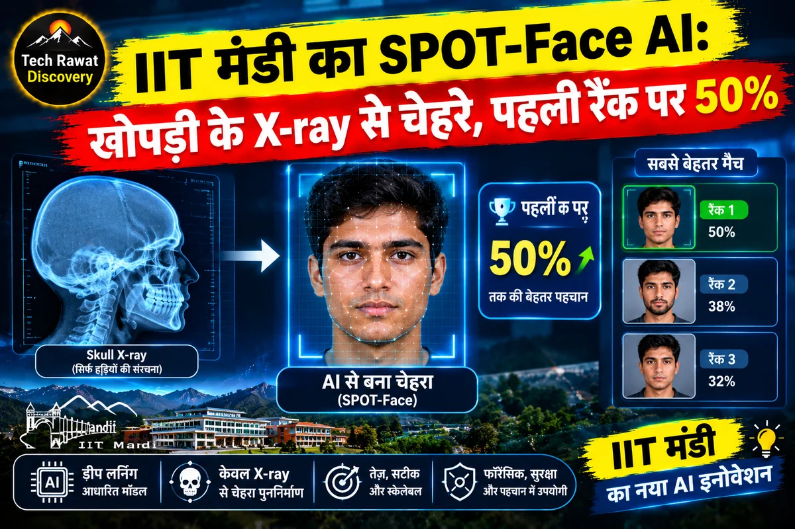
IIT मंडी का SPOT-Face AI: खोपड़ी के X-ray से चेहरे, पहली रैंक पर 50%
IIT मंडी का SPOT-Face AI खोपड़ी के X-ray से संभावित चेहरों की रैंकिंग बनाता है। भारतीय डेटासेट पर पहली रैंक पर 50% और शीर्ष पांच में 72%, पर परीक्षण बहुत छोटा है।
पूरा लेख पढ़ें →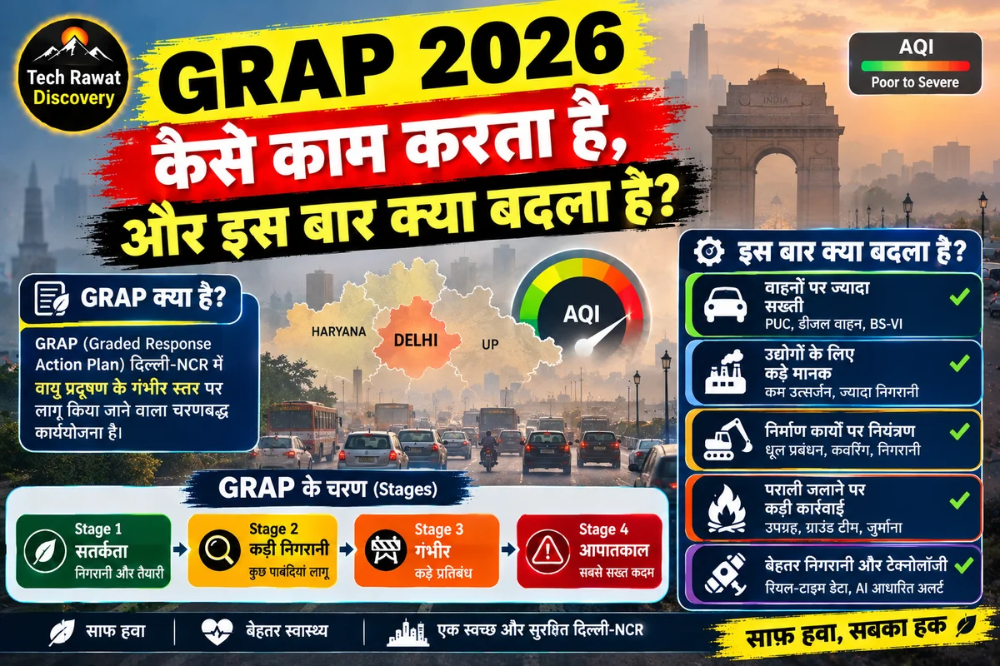
GRAP 2026 कैसे काम करता है, और इस बार क्या बदला है?
CAQM ने 28 सितंबर 2026 को GRAP की अनुसूची बदली: जनरेटर और बसों की पाबंदी चरण I में आई, सोनीपत तक कार रोक बढ़ी। जानिए चारों चरण AQI के हिसाब से कैसे चलते हैं।
पूरा लेख पढ़ें →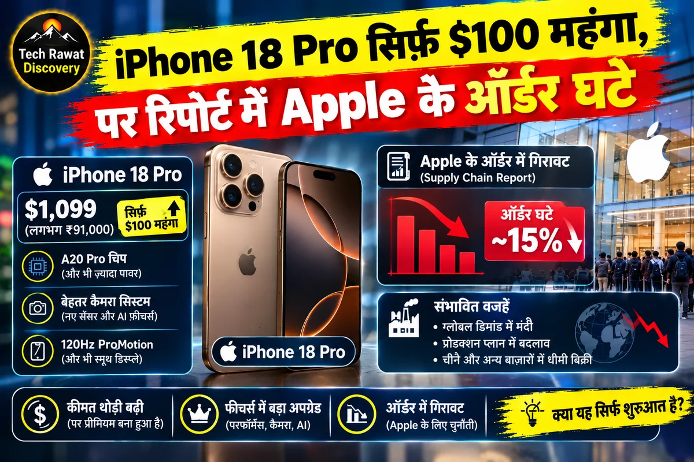
iPhone 18 Pro सिर्फ़ $100 महंगा, पर रिपोर्ट में Apple के ऑर्डर घटे
Nikkei Asia की रिपोर्ट के मुताबिक Apple ने iPhone 18 Pro के पुर्ज़ों के ऑर्डर घटाए। वजह AI डेटा सेंटरों से बढ़ी मेमोरी चिप की क़ीमतें हैं, जिसका सबसे गहरा असर भारत के सस्ते फ़ोनों पर दिखा।
पूरा लेख पढ़ें →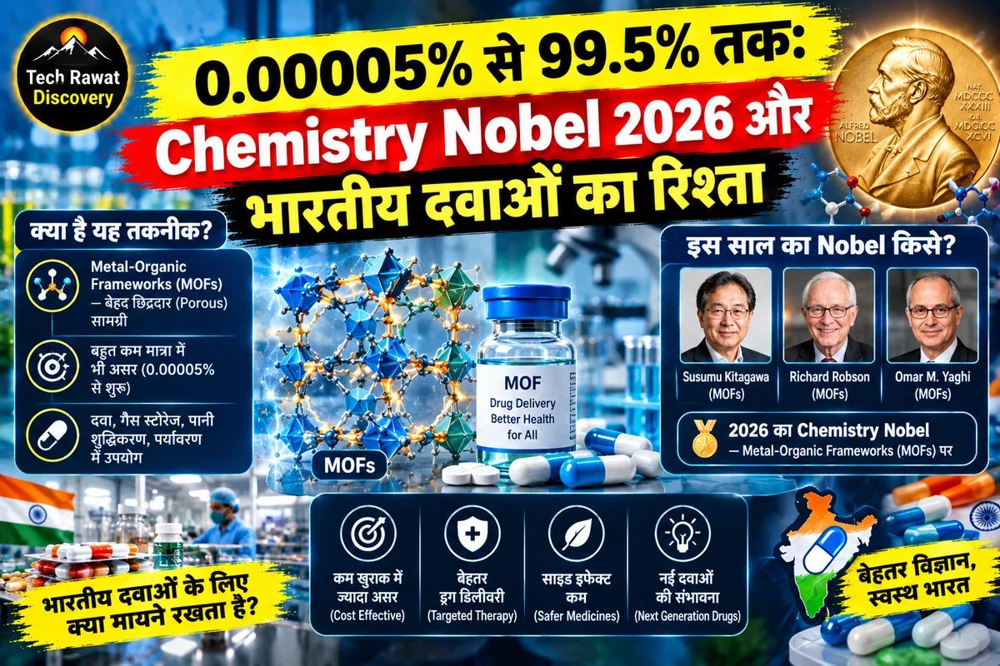
0.00005% से 99.5% तक: Chemistry Nobel 2026 और भारतीय दवाओं का रिश्ता
केमिस्ट्री नोबेल 2026 Kagan और Soai को मिला। जानिए दर्पण-रूप अणुओं की पहेली, Soai प्रतिक्रिया में 0.00005% से 99.5% तक का सफ़र और भारतीय दवा उद्योग से इसका रिश्ता।
पूरा लेख पढ़ें →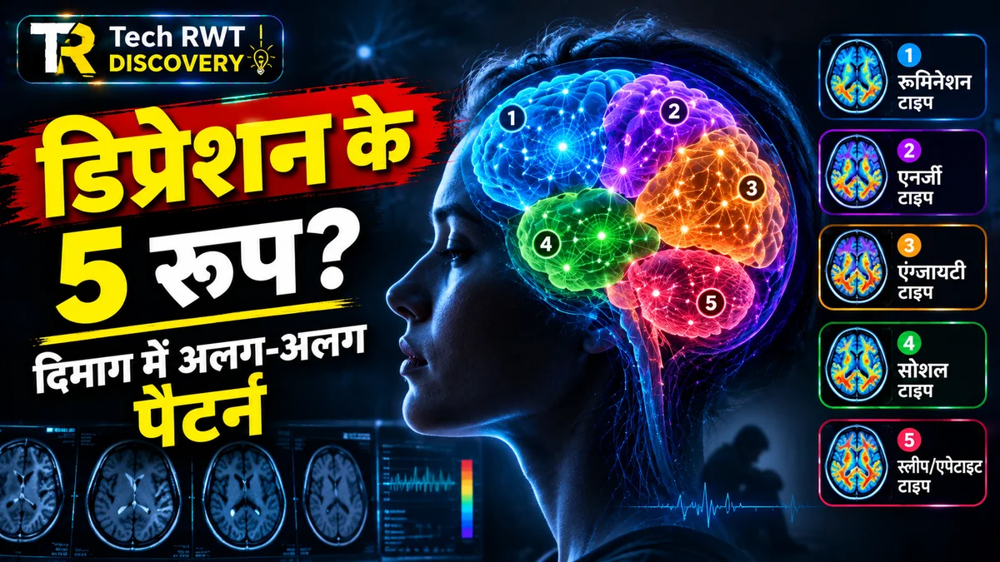
डिप्रेशन एक बीमारी जैसा दिखता है, पर दिमाग में इसके 5 रूप मिले
क्लीनिक में दो मरीज़ों को एक जैसा 'डिप्रेशन' बताया जा सकता है, पर दिमाग के अंदर बिल्कुल अलग पैटर्न चल रहे हो सकते हैं। नई स्टडी में डिप्रेशन के पांच अलग रूप मिले। भारत के लिए मतलब जानें।
पूरा लेख पढ़ें →Vitamin D2 Supplement से घट सकता है D3 का स्तर: नई स्टडी
पहले माना जाता था Vitamin D2 और D3 बराबर काम करते हैं। नई स्टडी कहती है D2 लेने से D3 का स्तर घट सकता है। भारत के 70-90% कमी वाले लोगों के लिए मतलब जानें।
पूरा लेख पढ़ें →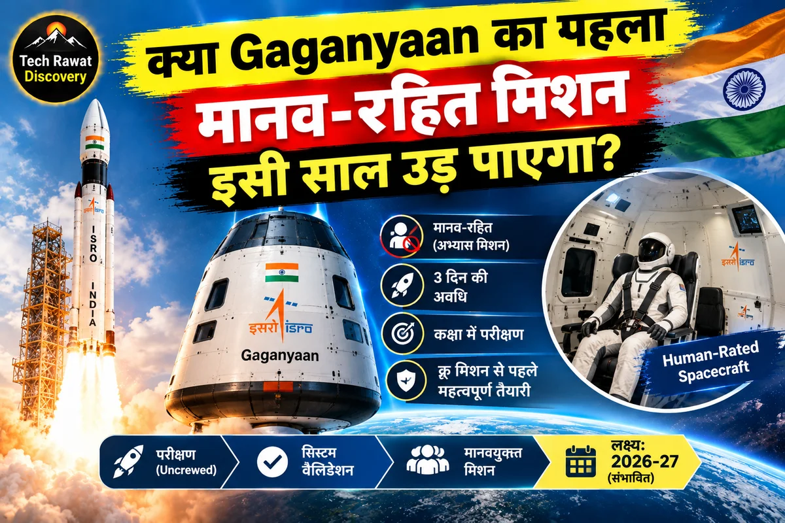
क्या Gaganyaan का पहला मानव-रहित मिशन इसी साल उड़ पाएगा?
ISRO ने Gaganyaan के पहले मानव-रहित मिशन G1 के क्रू मॉड्यूल की इंटीग्रेशन और टेस्टिंग पूरी कर ली है। रिपोर्ट्स के अनुसार उड़ान नवंबर-दिसंबर 2026 में संभव है, पर तारीख अभी पक्की नहीं।
पूरा लेख पढ़ें →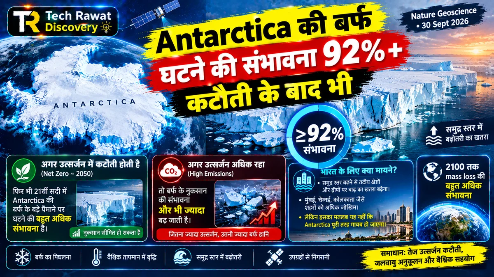
Antarctica की बर्फ घटने की संभावना 92%+, कटौती के बाद भी
Nature Geoscience के नए अध्ययन के अनुसार अंटार्कटिका की बर्फ इस सदी में घटने की संभावना कम से कम 92% है, उत्सर्जन में तेज़ कटौती के बाद भी। जानिए मतलब, सीमाएं और भारत के तटों पर असर।
पूरा लेख पढ़ें →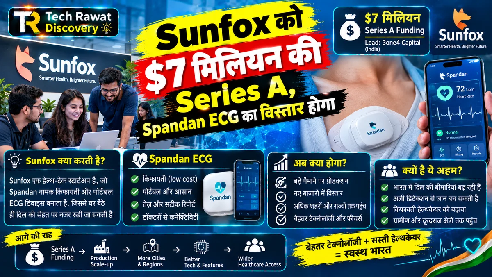
Sunfox को $7 मिलियन की Series A, Spandan ECG का विस्तार होगा
देहरादून की Sunfox ने $7 मिलियन की Series A जुटाई। जानिए Spandan ECG कैसे काम करता है, तैनाती के आंकड़े कंपनी के दावे हैं या सबूत, और ECG की सीमाएं क्या हैं।
पूरा लेख पढ़ें →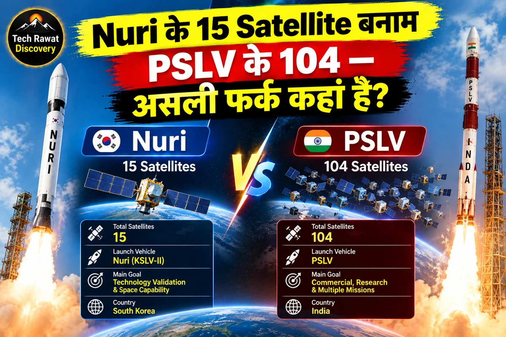
Nuri के 15 Satellite बनाम PSLV के 104 — असली फर्क कहां है?
Nuri ने 7 अक्टूबर 2026 को 15 में से 14 satellite 570 km की कक्षा में छोड़े, जबकि PSLV-C37 ने 2017 में 104। दोनों का असली फर्क गिनती में नहीं, payload के स्वभाव में है।
पूरा लेख पढ़ें →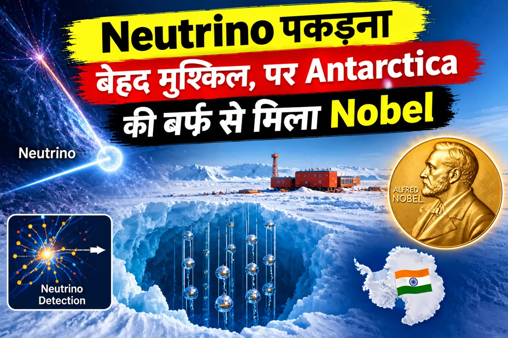
Neutrino पकड़ना बेहद मुश्किल, पर Antarctica की बर्फ़ से मिला Nobel
6 अक्टूबर 2026 को Francis Halzen को भौतिकी का Nobel मिला। जानिए Antarctica की बर्फ़ में दबा IceCube कदम-दर-कदम neutrino कैसे पकड़ता है और भारत के लिए इसका मतलब क्या है।
पूरा लेख पढ़ें →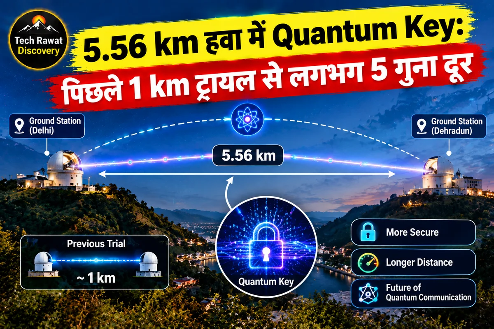
5.56 km हवा में Quantum Key: पिछले 1 km ट्रायल से लगभग 5 गुना दूर
QNu Labs, BISAG-N और IIT गांधीनगर ने 27-28 सितंबर 2026 की रात 5.56 km की हवा पर Quantum Key बनाई। यह पिछले 1 km वाले प्रयोग से कितना आगे है और क्या बाकी है?
पूरा लेख पढ़ें →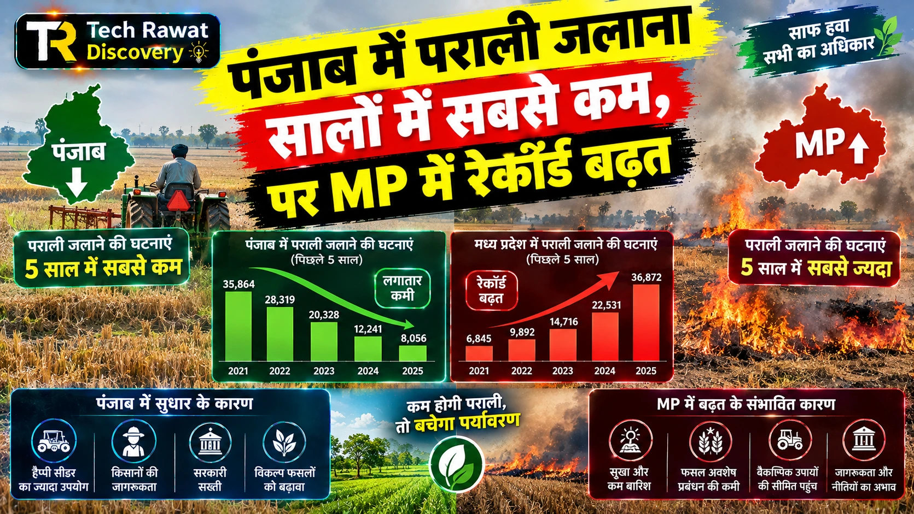
पंजाब में पराली जलाना सालों में सबसे कम, पर MP में रेकॉर्ड बढ़त
इस सीज़न मध्य प्रदेश में पराली जलाने की घटनाएं पंजाब से आगे निकल गईं। जानें साल-दर-साल आंकड़े, यह बदलाव क्यों आया, और भारत के प्रदूषण-नियंत्रण नीति के लिए इसका क्या मतलब है।
पूरा लेख पढ़ें →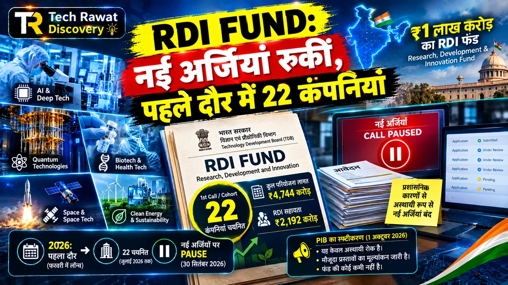
RDI Fund: TDB ने नई अर्जियां रोकीं, पहले दौर में चुनीं 22 कंपनियां
TDB ने 30 सितंबर 2026 को RDI Fund की नई अर्जियां रोक दीं। 1 लाख करोड़ रुपए की योजना में पहले दौर की 22 कंपनियां, 3,000 करोड़ का आवंटन और रुकने की दो वजहें, पहले बनाम अब।
पूरा लेख पढ़ें →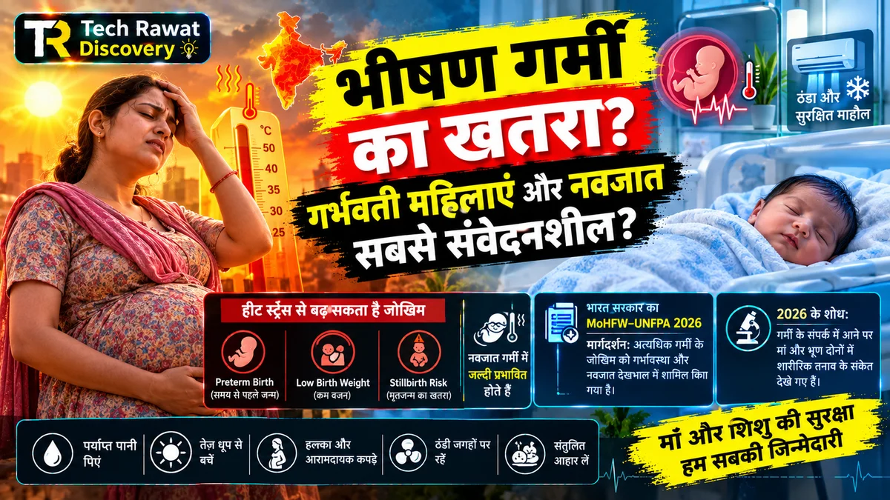
क्या भीषण गर्मी गर्भवती महिलाओं और नवजातों के लिए खतरा बन रही है?
Wellcome के नए सर्वे में भारत समेत पांच देशों के 73% मातृ-स्वास्थ्यकर्मियों ने गर्भवती महिलाओं में गर्मी से जुड़ी दिक्कतें बढ़ती देखीं। भारत का आंकड़ा और इसके मायने पढ़ें।
पूरा लेख पढ़ें →